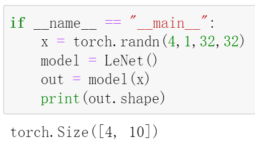

LeNet-5
LeNet-5作为CNN的开山之作，在如今看来并不复杂，但在当时可以称得上是开创性的成就，并且其之后出现的许多卷积架构基本遵循LeNet-5的思想。

LeNet-5的网络结构如上图所示，它最开始被用于解决手写数字识别问题。
对于一张32*32单通道手写数字图片，首先经过卷积（kernel_size: 5）得到6张28*28的特征图，然后做下采样(池化,kernel_size=2,stride=2)将特征图尺寸减半；接着经过一顿卷，得到120张1*1的特征图；将其展平，得到120维的向量，经过两个全连接层，输出10维的向量，代表该图片中的数字取值的概率（取值集合为0到9）。
当然，卷积与池化操作之间做了激活操作，在当时用的Simoid和Tanh。在稍后的代码实现中，我们会改成现在更常用的ReLU。更多细节，将在代码实现中体现。
PyTorch 实现LeNet-5
1
2
3
4
5
6
7
8
9
10
11
12
13
14
15
16
17
18
19
20
21
22
23
24
25
26
27
28
29
30
| import torch
import torch.nn as nn
class LeNet(nn.Module):
def __init__(self):
super(LeNet,self).__init__()
self.relu=nn.ReLU()
self.pool=nn.AvgPool2d(kernel_size=(2,2),stride=(2,2))
self.conv1=nn.Conv2d(in_channels=1,out_channels=6,kernel_size=(5,5),stride=(1,1),padding=(0,0))
self.conv2=nn.Conv2d(in_channels=6,out_channels=16,kernel_size=(5,5),stride=(1,1),padding=(0,0))
self.conv3=nn.Conv2d(in_channels=16,out_channels=120,kernel_size=(5,5),stride=(1,1),padding=(0,0))
self.linear1=nn.Linear(120,84)
self.linear2=nn.Linear(84,10)
def forward(self,x):
x=self.relu(self.conv1(x))
x=self.pool(x)
x=self.relu(self.conv2(x))
x=self.pool(x)
x=self.relu(self.conv3(x))
x=x.reshape(x.shape[0],-1)
x=self.relu(self.linear1(x))
x=self.linear2(x)
return x
|
测试一下：

参考：